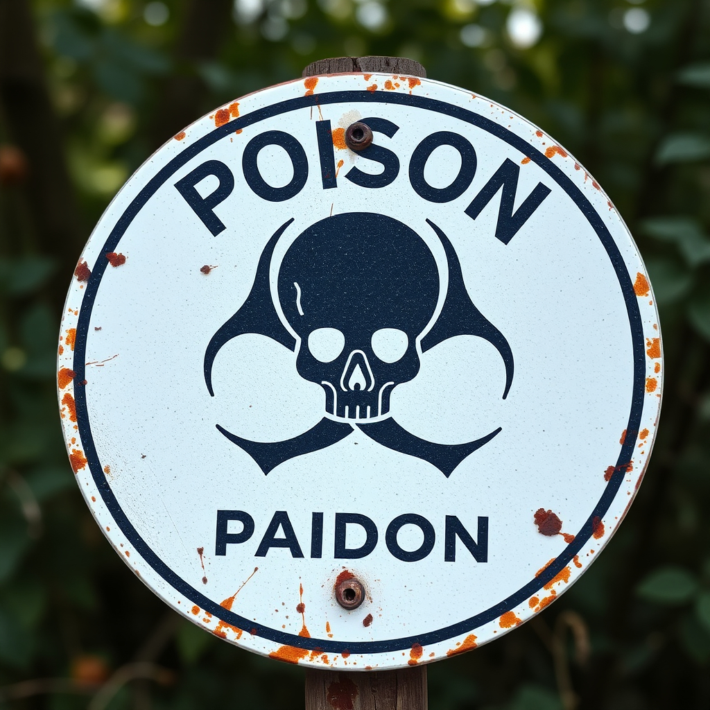

Soil Health and Its Impact
Soil health is the foundation of sustainable agriculture, and its quality directly influences global food security, economic stability, and environmental resilience. Healthy soils support nutrient-rich crops, mitigate the effects of climate change, and help protect ecosystems.
Factors Threatening Soil Quality
Soil quality might be degraded by several factors, such as:
- Soil degradation: Over-reliance on nitrogen fertilizers disrupts the balance of soil microbiota, which are essential for maintaining soil fertility.
- Water pollution: Only a fraction of the nitrogen fertilizers applied to fields is absorbed by plants.
- Greenhouse gas emissions: Nitrogen fertilizers contribute to the release of nitrous oxide (N₂O), a potent greenhouse gas that exacerbates global climate change.
- Soil acidification: Excess nitrogen application alters soil pH, leading to acidification.
Impact on Global Populations and Food Security
Several places are already suffering because of soil quality degradation. Some key impacts include:
- Lower crop yields: Degraded soils are less capable of retaining water and nutrients, leading to reduced crop productivity.
- Economic instability: Soil degradation not only affects farmers' livelihoods but also places a burden on entire economies.
- Rural poverty: Communities dependent on agriculture face heightened vulnerability when soil health declines.
- Human health risks: Poor soil health and water pollution, caused by excessive nitrogen use, contribute to various health problems.
Solutions to Address Soil Degradation

It is critical to adopt sustainable agricultural practices that protect and restore soils. Some of ways that achieve that are as follow:
- Sustainable farming practices: Reducing the reliance on synthetic fertilizers and adopting organic farming, crop rotation, and agroforestry can enhance soil health.
- Empowering small-scale farmers: SDG 2 calls for empowering small farmers through education and access to sustainable technologies.
- Earth observation (EO) technology: The integration of EO technology offers valuable insights into soil conditions.
- Reducing nitrogen use: Governments and agricultural industries need to work together to reduce the use of nitrogen fertilizers by promoting precision agriculture.
Interactive Quiz
Test your knowledge about soil health and how to preserve it!